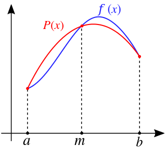
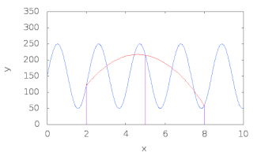

自适应Simpson法是一种基于Simpson法的数值积分算法
Simpson法
Simpson法是一种常见的数值积分算法, 其思想是用几段抛物线去拟合原曲线, 从而近似求出其面积
放一张从维基拿的图

其中f(x)为原函数, P(x)为拟合函数
本篇内容如无特殊说明, 均有如下假定:
- f(x)在区间[a,b]上任意阶可导 (其实没必要这么强, 只是懒得弱化了)
流程
-
对一段区间[a,b], 取其中点m=2a+b
-
设P(x)=Ax2+Bx+C
-
令P(a)=f(a),P(m)=f(m),P(b)=f(b), 显然我们可以解出A,B,C
实际上, 我们有
P(x)=f(a)(a−m)(a−b)(x−m)(x−b)+f(m)(m−a)(m−b)(x−a)(x−b)+f(b)(b−a)(b−m)(x−a)(x−m)
-
此时便可假定
∫abf(x)dx≈∫abP(x)dx=6b−a(f(a)+4f(m)+f(b))
令h=2b−a, 则有
∫abf(x)≈3h(f(a)+4f(m)+f(b))
Q&A
-
Q: 为什么要设这个h
A: 是因为Simpson法是Newton-Cotes积分法的特例, 因为不是重点, 这里就不展开讲了
还有一个数值积分法叫Simpson 3/8法, 同样也是Newton-Cotes积分法的特例, 式子是这样的:
∫abf(x)≈8h(f(a)+3f(m1)+3f(m2)+f(b))
其中h=3b−a, m1,m2是a,b的三等分点
-
Q: 此法误差如何
A: 为 −901(2b−a)5f(4)(ξ), ξ∈[a,b], 证明略
复化Simpson法
就是把[a,b]拆成多个等长小区间, 每个区间应用Simpson法后拼合在一起
放一张从维基拿的动图

这张动图展示了多次细分应用复化Simpson法的拟合效果
流程
令
- h=nb−a
- xi=a+ih, i=0,1,...,n
- fi=f(xi)
然后就有
∫abf(x)dx≈3hi=1∑2n(f2i−2+4f2i−1+f2i)
误差为 −180h4(b−a)f(4)(ξ), ξ∈[a,b]
自适应Simpson法
复化Simpson法是把[a,b]拆成多个等长小区间, 然而在多数情况下, 有一些拆分是没有必要的. 比如如果f(x)在[xi,xi+2]∈[a,b]上已经能够得到较好的拟合效果了, 我们就没必要继续细分成[xi,xi+1]和[xi+1,xi+2]了
自适应Simpson法就能根据函数性质来判断是否要继续细分, 所以其要比复化Simpson法快
流程
- 取中点m=2a+b
- 分别对区间[a,b], [a,m], [m,b]应用Simpson法, 设得到的面积分别为S, Sl, Sr
- 若S与Sl+Sr足够接近, 则认为区间[a,b]面积的近似值已经求得, 否则分别对区间[a,m], [m,b]递归应用本操作
Q&A
-
Q: 什么是足够接近
A: 当 ∣S−(Sl+Sr)∣<15ϵ 时认为足够接近
ϵ是根据具体需要设定的误差值, 注意细分区间时对应误差值要减半
-
Q: 15是怎么来的
A: 是经过一系列误差分析得出的结果, 论文在参考区
代码
Show codes
1
2
3
4
5
6
7
8
9
10
11
12
13
| double F(double num) {
}
double simpson(double a, double b) {
double mid = (a + b) / 2;
return (F(a) + 4 * F(mid) + F(b)) * (b - a) / 6;
}
double asr(double a, double b, double eps, double S) {
double mid = (a + b) / 2;
double S_l = simpson(a, mid), S_r = simpson(mid, b);
if (abs(S_l + S_r - S) <= 15 * eps) return S_l + S_r + (S_l + S_r - S) / 15;
return asr(a, mid, eps / 2, S_l) + asr(mid, b, eps / 2, S_r);
}
|
例题
参考